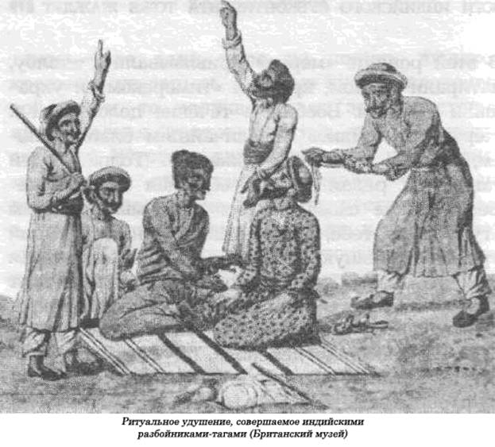
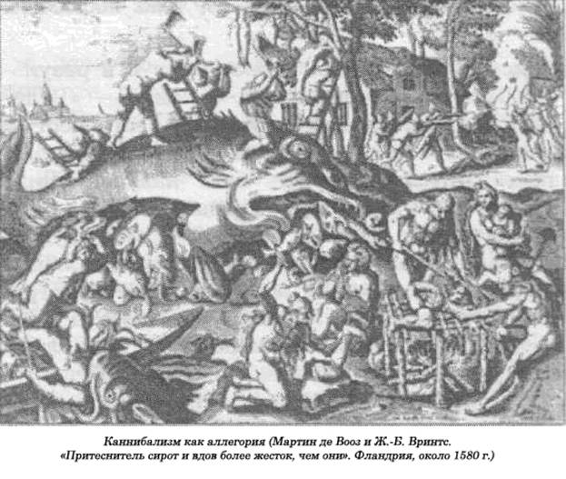

Боги Индийского субконтинента тоже жаждут.
Учение Махатмы Ганди превратило современную Индию в заповедник ненасильственных действий. Но природа людей всегда двойственна — в той же Индии, где родился в прошлом столетии Ганди, а двадцать четыре века до этого Гуатама Будда, история человеческих жертвоприношений весьма продолжительна. Разрабатывая удивительно странные методы принесения в жертву богам людей, индусы проявили такую изобретательность, которую не сыскать в других странах мира.
Мы, по сути дела, вступаем в совершенно иное измерение в области жертвоприношений. Если иудеи, греки и римляне каким-то образом пытались, по крайней мере, уменьшить поток жертвенной крови, то в остальных частях мира, чуждых греческим и христианским традициям, ничего подобного не происходило. Будь то в Индии, Юго-Восточной Азии, Океании, Африке или Америке доколумбовой эпохи — повсюду живые люди приносились в жертву алчущим крови богам до самого прихода туда европейцев, зверства которых, в свою очередь, отличались совершенно иной жестокостью. В Западной Африке или в Мексике времен ацтеков человеческие жертвоприношения были настолько чудовищны, что вызывали ужас у первых белых захватчиков. В Индии меньше всего приносили людей в жертву две тысячи лет назад — во времена расцвета буддизма. Рекордного уровня человеческие жертвоприношения достигли в эпоху английской колонизации. Формы жертвоприношений, свидетелями которых становились англичане, были настолько разнообразными, что я, не будучи в состоянии охватить их все, решил ограничиться только несколькими, наиболее экзотическими обрядами. Прежде всего остановимся на таком обряде, как сжигание живьем вдов.
Типично индийская смесь насилия и мягкости поражала европейцев, отношение которых к этой стране постоянно менялось, переходя из одной крайности в другую. Англичане в основном с уважением относились к индийской религии, однако постоянно выражали надежду на то, что в один прекрасный день индусы уверуют в Христа и распрощаются со своими языческими идолами и жестокими обычаями. Англичане, эти христиане, судили обо всем только по видимым злоупотреблениям людей, которые относились к женщинам как к несушкам, жили в тесных домах, как в курятнике, и считали куда большим грехом убить корову, нежели человека. Они хоронили молодых женщин живыми и выдавали маленьких девочек за стариков, а их детей потом выбрасывали в устье Ганга на корм крокодилам.
Только после того, как с вопиющими злоупотреблениями было в основном покончено, более духовный и более пассивный индийский подход к жизни теперь вызывал не только похвалы, но и зависть со стороны европейцев, начинающих сомневаться в своих благословенных материальных успехах. Христиане сотнями потянулись на Восток, выражая горячее желание посидеть у ног какого-нибудь гуру и испить сладкого нектара жизни, построенной на самоотречении. Индуизм уже не отвергали с презрением как низкое идолопоклонство, что обрекало его на уничтожение, а рассматривали как мистический ключ, способный открыть врата рая и привести к истинной свободе. Уже почти все забыли о детях, которых индусы бросали на съедение акулам, о вдовах, сожженных на кострах, о «мериа» (жертва), умерщвленных с помощью тысячи порезов, нанесенных на тело, — все были охвачены эйфорией новой веры, темные стороны которой теперь никто не замечал.
Так как человеческие жертвоприношения продолжались и при английском правлении, все они были самым аккуратным образом запротоколированы и их число тщательно подсчитано — редкий случай государственной статистики. Великое разнообразие чудовищных обрядов, наличие достоверных и полных данных о них превращали Индию в желанную страну для ученых и исследователей. Кроме британской статистики мы располагаем индийскими религиозными текстами самого раннего периода, в которых отражены человеческие жертвоприношения с самыми яркими подробностями. Веды были составлены около 1400 г. до н.э., а «Яджурведа» открывается песнопениями, предусмотренными для каждого такого акта. Там перечисляются имена различных богов вместе с той жертвой, которой тот отдает предпочтение, например жрец — для Брахмы, музыкант — для бога музыки, рыбак — для бога рек и т.д. Одна из ранних форм жертвоприношения для достижения могущества человека над всеми земными тварями требовала принесения в жертву одиннадцати человек и одиннадцати выхолощенных коров. Принесение в жертву коней, чтобы разбогатеть, предусматривало и убийство человека. Однако несправедливо считать, что принесение людей в жертву богам — индийская монополия в азиатских странах. «Сати», как европейцы называли обычай самосожжения вдовы вместе с трупом мужа, был не только индийским, но и китайским обрядом, а в Юго-Восточной Азии ритуальные убийства принимали самые разнообразные формы. До недавнего времени бирманские цари сжигали жертвы живьем у ворот своей столицы, чтобы «их духи охраняли город». В Таиланде, когда закладывался новый город, воины царя из засады выслеживали первых попавшихся четырех пешеходов, которых хоронили живьем под столбами ворот. Им теперь предстояло играть роль ангелов-хранителей.
Хотя индусы практиковали множество различных форм человеческих жертвоприношений, они редко съедали свои жертвы. От такой людоедской практики до нашего времени дошли лишь слабые отголоски из далекого прошлого. Например, у отдаленного племени ооруйя жрец, приносивший человеческую жертву богу войны, говорил, обращаясь к соплеменникам: «Это приношение богам вам потом придется съесть». Отдельные случаи каннибализма происходили в некоторых частях Северо-Восточной Индии. В начале XIX века ежегодно жертва приносилась матери-богине Кали, жене индийского бога Шивы, так как считалось, что она питается исключительно человеческой плотью. В новых одеждах, с гирляндами на шее, добровольная жертва обычно сидела на возвышении перед изображением богини, читая про себя молитвы. Завершив чтение, человек подавал палачу особый знак, и тот, тут же срубив ему голову, помещал ее перед богиней на золотом блюде. Только легкие жертвы варили, и их съедали присутствовавшие на казни йоги, а члены семьи местного царька довольствовались лишь горсточкой риса, сваренного в крови жертвы. В 1832 году один раджа, которому не хватало добровольцев для такого ритуала, насильно захватывал с этой целью людей за пределами своего штата, и в результате англичане отобрали у него его владение. Иногда жертвоприношения в честь матери-богини принимали масштабы массового кровавого убийства. В Ассаме, на северо-востоке Индии, когда раджа Нарам Нарайана возводил в 1585 году храм, он по этому случаю принес в жертву 140 человек, отрубленные головы которых поднес богине Кали на бронзовых блюдах, так как у него не было в это время достаточно золота. Подбор добровольцев для этой цели носил случайный характер. Этих людей называли «бхога», их осыпали всевозможными милостями до того дня, когда праздник в честь богини обрывал нить их жизни. Но если добровольцев не хватало, то могли схватить любого крепкого человека. Индусы часто обставляли такие обряды некоторыми тонкостями, но основные формы жертвоприношений оставались без особых изменений. Например, в большом храме Шивы в Танжоре каждую пятницу богам приносили в жертву мальчика, пока англичане не запретили подобную практику. В городе Джайпур в 1861 году, когда раджу короновали после смерти его отца, была принесена в жертву молодая девушка в честь богини Дурги, жены Шивы. Обычай хоронить людей под новыми строениями не исчез и в нашем веке: люди во многих регионах Индии твердо верят до сих пор, что жизнь человека необходима для этой цели, и когда поблизости возводится какое-нибудь здание, стараются не выходить из дома, чтобы не стать нечаянными жертвами. Джордж Григсон, опубликовав свою книгу «Сельская жизнь в Бихаре», рассказывал, что для нее ему потребовалась фотография типичного бихарского дома. Бабушка в одной семье, однако, не позволила ему заснять на пленку ни одного из своих внуков и внучек. Она объяснила, что неподалеку от них правительство возводит новый мост через реку Гандак и строителям нужны детишки, чтобы похоронить их живыми под сваями. Довольно распространенными были жертвоприношения духам воды и рек, так как речных демонов ужасно боялись. Еще до 30-х годов XIX века правитель Мевара в Южной Индии перед тем, как переправиться через реку Махи, непременно приносил в жертву человека, тело которого после этого ритуала выбрасывали в воду на корм рыбам.
Для пополнения числа добровольных жертв в Индии прибегали к разным источникам. Для этого использовались пленники, рабы и преступники, как, впрочем, и заезжие купцы.
В Индии существовало множество самых разнообразных форм принесения в жертву богам детей. Там бытовал чудовищный обычай, когда убивали детей бедных родителей, чтобы жена вельможи смогла родить. Иногда даже приносились в жертву царские дети, чтобы тем самым гарантировать постоянный приплод. Рассказывают, что Сомаке в Северной Индии никак не удавалось зачать сына от целой сотни своих жен. Наконец, когда у него родился сын, король сказал, что ему не нужен один-единственный сын, ему требуется целая сотня, и тогда жрец посоветовал ему: «О, повелитель мой! Позволь мне организовать жертвоприношение и пожертвовать твоим сыном Джантой. И тогда в не столь отдаленном будущем у тебя появится сотня сыновей. Когда жир Джанту сгорит в огне костра, будущие матери надышатся дымом и очень скоро принесут тебе множество сыновей, крепких и здоровых. А Джанту снова родится от своей матери, на спине у него появится золотая отметина». Царь принес в жертву своего наследника. Будущие матери надышались дымом того костра, в котором сгорел ребенок, и все вскоре забеременели, а через девять месяцев у царя родилась целая сотня сыновей, и снова родился самый старший сын Джанту от своей же матери. Жрец умер, и долгое время пребывал в аду в наказание за то, что сотворил. Эта история, конечно, похожа на легенду, но мы располагаем свидетельствами, что подобные обряды существовали, и не в столь отдаленные времена.
Еще в 1860-х годах детей приносили в жертву богу Шиве в Южной Бенгалии, чтобы избежать страшной засухи, и индусы упорно цеплялись за старый обычай жертвовать одним ребенком, чтобы в награду получить нескольких. Уильям Слимен, прославившийся своей борьбой с разбойниками-душителями, сообщает, что бесплодные женщины обещали богу-разрушителю Махадео принести в жертву своего первенца в надежде, что у них появятся другие дети. Мать обычно воспитывала своего сына до периода половой зрелости, когда сообщала ему об уготованной печальной судьбе. Начиная с этого момента он посвящался только одному богу, и ему предстояло в день ежегодного праздника в честь этого божества броситься вниз головой со скалы высотой в пятьсот футов. Но еще более чудовищным обычаем было выбрасывать детей на съедение акулам в том месте, где река Ганг впадает в океан. Жертвы посвящались богине воды. Этот дикий обряд первым попал в поле зрения англичан, которые запретили его в 1802 году.
Еще одна отвратительная практика постоянно досаждала англичанам, — систематические убийства маленьких девочек, которые оказывались ненужными для родителей. Если убийство детей и не было жертвоприношением в строгом смысле этого слова, то оно явно было следствием индуизма и его строгой кастовой системы. О браке девушки за рамками ее собственной касты не могло быть и речи, а продолжительное девичество считалось нецеломудренным и позорным для всей семьи. Правила в этом отношении становились все строже и строже, а выбор постоянно суживался. В начале XIX века, например, хуже всего с молодыми девушками дело обстояло в Пенджабе, где предложение невест намного превышало спрос. Сыновья отдавались семьями тем, кто был готов заплатить за них наивысшую цену, а приданое одной-единственной дочери могло пустить по миру ее родителей. Рождение девочки в бедной, но очень знатной семье касты раджпутов считалось настоящей катастрофой. Самым простым выходом было убийство ребенка — его либо просто душили, либо травили, для чего мать натирала опием соски своих грудей.
Среди тех человеческих жертвоприношений, которые существовали и в XIX веке, наиболее странными, на наш взгляд, были обряды племени гондов в штате Орисса. Это было древнее племя, ранее жившее на севере Индии, пока не было оттуда вытеснено арийскими племенами в 1400 г. до н.э. Их ритуал обессмертил Джеймс Фрэзер в своей знаменитой книге «Золотая ветвь». Все ритуалы были явно связаны с урожаем и плодородием почвы. Гонды приносили в жертву людей в честь богини Земли Тари Пенну. Человеческие жертвы, по мнению многих, были нужны для получения высокого урожая такой культуры, как «тумерик», из которой приготавливался знаменитый краситель. Считалось, что если поле не полить людской кровью и не зарыть в землю куски человеческой плоти, то получаемая из этого растения ярко-красная краска утратит свою обычную глубину. Жертвы для этой цели назывались «мериа», и традиция требовала, чтобы их либо покупали еще в младенчестве или же с детства специально готовили к незавидной судьбе. Кроме тех детей, которые уже рождались как «мериа», дополнительное их число приобреталось у племени ткачей пан, которые в свою очередь крали их у зазевавшихся родителей. Все долгие годы, до того рокового дня, когда «мериа» приносился в жертву богине, его усиленно кормили и баловали. Когда они вырастали, им выделяли участки земли и предоставляли жен, с которыми они производили на свет детей, таких же «мериа», как и они сами.
За десять-двенадцать дней до ежегодной торжественной церемонии у намеченной жертвы сбривали наголо волосы. После нескольких ночей, проведенных в кутежах, в ночь перед главным событием жертву одевали во все новое, и начиналось торжественное шествие сельчан во главе с ним под музыку и танцы от деревни до рощицы «мериа» — на этом месте, неподалеку от деревни, росло несколько высоких деревьев, не тронутых еще лезвием топора. Чтобы посмотреть на ритуал жертвоприношения, сюда стекались толпы людей. Как и в древней Мексике, никто не желал оставаться в такую минуту дома, все поголовно — мужчины, женщины, дети — хотели во что бы то ни стало присутствовать на этом «празднике».
В этой рощице «мериа» привязывали к столбу, натирали маслом, красили «тимереком» и украшали цветами. Вообще в течение целого дня к жертве относились с величайшим благоговением, словно к самому божеству. Толпа людей танцевала рядом с ним, обращая к матушке-Земле такие слова: «О бог наш, мы приносим эту жертву тебе, а ты ниспошли нам хороший урожай, хорошую погоду и крепкое здоровье». Все это время люди, толкаясь, мешая друг другу, пытались завладеть хоть крошечным сувениром от «мериа», пусть даже его плевком. В некоторых деревнях, до того как отвести обреченного на гибель человека в жертвенную рощу, его водили от дома к дому, обитатели которых вырывали у него по волоску с головы. Метод убийства жертвы-«мериа» разнился от деревни к деревне, но принцип сохранялся один и тот же: смерть должна была быть долгой и мучительной. Как и в Мексике, жертва не имела права оказывать ни малейшего сопротивления, и довольно часто с этой целью его заставляли выпить большую дозу сильнодействующего наркотика.

Вот как описывает один из таких обрядов Джеймс Фрэзер:
«Одним из самых простых способов было удушение. Для этого обычно расщепляли толстую ветвь дерева, и в эту трещину просовывали либо шею жертвы, либо его грудь, после чего верховный жрец со своими помощниками сдавливали трещину что было сил. Затем жрец наносил легкие удары по телу жертвы острым топором, после чего толпа бросалась к несчастному, стесывая мясо у него с костей, оставляя, правда, голову и его внутренности нетронутыми... В Чинна Кимеди жертву тащили, например, по полям в окружении толпы, и люди, стараясь не задеть голову и его внутренности, кожами сдирали мясо с его тела, пока несчастный не испускал дух. Другой метод убийства в том же районе заключался в том, что жертву привязывали к хоботу деревянного слона, который вместе с жертвой вращался по оси, а толпа старалась изловчиться и во время этих быстрых вращений срезать с тела несчастного кусок-другой плоти. И это продолжалось до тех пор, пока он не умирал у них на глазах. В некоторых деревнях было обнаружено до четырнадцати таких деревянных слонов, которые использовались в этих кровавых церемониях. В другом месте жертву медленно умерщвляли у костра. Для этого устраивалась низкая, покатая, как крыша, сцена, на которую клали жертву со связанными ногами, чтобы лишить ее возможности оказывать сопротивление, после чего рядом разводили костры и то и дело прижигали несчастного горящими головешками. Он скатывался вниз к костру, но его снова поднимали, укладывая на прежнее место, и чем больше он проливал горьких слез, тем тучнее, по мнению крестьян, выдастся урожай и более обильными будут дожди. На следующий день тело жертвы расчленялось на мелкие кусочки... и съедалось.
Сразу же после смерти «мериа» гонцы относили по кусочку его плоти в каждую деревню племени гондов. Там местный жрец разрезал его надвое, один кусочек он отдавал богине Земли, который сжигался в ее честь в небольшой ямке, вырытой в земле. Второй разрезался на еще более мелкие кусочки по числу членов семьи. Каждый из них заворачивал свой кусочек в листья и сжигал его в укромном местечке в земле».
О том, что обряды с принесением человеческой жертвы — «мериа» — были запрещены, свидетельствуют донесения майора (позже генерал-майора) Джона Кэмпбелла, о котором Фрэзер упоминает в своей книге. Из-за таких жертвоприношений, как «мериа», «сати», убийства через удушение, которые практиковались не в одном каком-то месте, а на территории всей страны, англичане попали в затруднительное положение. Как пишет в своей книге «Люди, которые правили в Индии» Филипп Вудрах, все были согласны в одном: англичане должны проявлять максимум осторожности и не вмешиваться в религиозные представления народа.
Для таких решительно настроенных людей, как Джеймс Томсон, который работал в северо-западных провинциях, это ограничение было не по нутру. Томсон был ревностным христианином, сыном миссионера и опекуном евангелического проповедника. Ему приходилось жить среди язычников, не имея права при этом обращать их в новую веру, и это сильно тревожило его совесть. Как официальное лицо, он не мог вмешиваться. Таким в то время было отношение к индийской религии. Однако долго закрывать глаза на происходящее тоже было нельзя. Могли ли англичане спокойно взирать на эти варварские акты, совершаемые якобы в честь богов, которые в глазах христиан представляли собой неприкрытое, зверское, злодейское убийство? Например, несчастных «мериа» выкармливали все жители деревни на убой в прямом смысле этого слова, как мы выкармливаем свиней, и об этой чудовищной практике англичанам даже долгое время не было ничего известно. Только в 1863 году Джордж Рассел из Мадраса направил британским властям первое донесение. Изучив его доклад, правительство Мадраса решило направить туда для расследования майора Кэмпбелла, строго наказав ему, чтобы вместе с ним направлялся вооруженный отряд, но только для его охраны, а не для защиты «мериа» от гибели, которую им уготовила их судьба.
Но Кэмпбелл оказался таким человеком, который не боялся идти на риск. Прежде всего он созвал всех вождей племени гондов. Он долго беседовал с ними, подчеркивая, какой ужас испытывает правительство от того, что они вытворяют с жертвами ритуальных убийств, добавив, что отныне правительство будет требовать жизнь любого из них за жизнь загубленной жертвы, если они будут упорствовать и продолжать заниматься этой чудовищной практикой. Разве после убийства жертвы ваш урожай стал более обильным, спрашивал он вождей. Те удалились, чтобы обсудить его слова. Он с нетерпением ждал ответа. До этого майор уже отверг предложенный вождями компромисс — приносить только одну жертву в год для всех деревень в целом. Наконец, они вернулись. Люди давно привыкли к обычаю убивать «мериа», сказали они ему, и их раджа не имел ничего против, но теперь, когда они стали подданными «великого правительства», они должны поступать так, как им велят. Пусть оно отныне несет ответственность за все их невзгоды, они перестанут убивать и будут приносить в жертву животных. Вот как вожди объяснили возникшую ситуацию своей богине: «Не сердись на нас, не гневайся, обрати гнев свой против этих джентльменов, которые смогут его перенести». Так и сделали. Племена гондов теперь сдавали своих «мериа», а майор Кэмпбелл проработал в этом районе еще шестнадцать лет, и за это время ему удалось спасти колоссальное число невинных жертв — 1506 человек!
Но ведь боги пока не умерли, и посвященные им кровавые ритуалы не могли исчезнуть за одну ночь — для этого требовалось время.
Боги долин требовали человеческих жертв, как и боги гор. Некоторые племена, жившие недалеко от границы, сумели, несмотря ни на что, сохранить свои племенные обычаи вплоть до наших дней и даже продолжали «походы за черепами». Они тоже верили в магические свойства человеческой головы, в которой находится вместилище души. Представления индусов в горных районах ничем не отличались от поверий туземных племен на Борнео или в Новой Гвинее, где «охота за черепами» превратилась в общенациональное увлечение. Среди наиболее стойких сторонников кровавого культа были горцы народности нага в провинции Ассам, на северо-востоке Индии. Девушки этого племени отказывались выходить замуж за юношу, который не принесет хотя бы одной головы из соседней деревни, так как, по их мнению, мужчина, не обеспечивший себя дополнительной «субстанцией души», лишен способности к деторождению.
Индийские племена по-разному относились к захваченным головам врагов. Так, в племени лхота их развешивали на ветвях главного дерева в деревне, тангхулы увенчивали ими кучу камней, кониаки, жившие на границе с Бирмой, нанизывали их на длинные бамбуковые шесты. Мы располагаем очень немногочисленными сведениями о том, что в Индии «охота за черепами» сопутствовала каннибализму, хотя достоверно известно, что в 1880 году туземцы в Гонома съели половину головы одного британского офицера. Т. Ходсон в 1880 году рассказал о своем визите к горным племенам нага. Вместе с вооруженным отрядом они прибыли на место как раз в тот момент, когда в деревню принесли две головы захваченных врагов. К великому сожалению, одна из голов принадлежала племяннику одного из его охранников. Ходсону с большим трудом удалось убедить туземцев вернуть голову родственнику убитого. Но, нужно сказать, что этот обычай в то время уже отмирал. Один старик рассказал Ходсону, что прежде «походы за черепами» практиковались в широком масштабе, хотя англичанин так и не понял, для чего они нужны туземцам. Горцы нага, к примеру, утверждали, что захватывают головы, так как они приносят богатство их владельцу.
В другой горной деревне человеческие головы подносились в жертву богине Мавели. Она была настолько капризной, что не желала принимать в качестве жертвы животных, и, если ей не приносили человеческую голову хотя бы раз в три года, она напускала на людей страшные болезни.
Любой любопытный ритуальный обряд сохранялся до недавнего времени среди туземцев племени хаси в провинции Ассам. Название хаси для многих в Индии стало синонимом жестоких зверств, и повсюду в стране была известна их ужасная привычка похищать детей и предлагать их в жертву своей богине-змее Тхлен. Индусы верили, что если эта богиня поселялась в доме, то не было никаких средств, чтобы избавиться от нее. До тех пор пока семья кормила богиню ее излюбленной пищей — принесенными в жертву детьми, она процветала, но как только человеческая кровь заканчивалась, начинались всякие невзгоды и частые болезни.
В Индии долго существовала и другая форма ритуального убийства — удушение разбойниками, получившая в стране такой размах, что потребовались решительные действия со стороны английского правительства для ее подавления. Когда в 1876 году Индию посетил принц Уэльский, будущий английский король Эдуард VII, преступления разбойников-душителей уже пошли на убыль. Принца привели в тюрьму в Лахоре, где он беседовал с пожилым, некогда страшным разбойником, жизнь которому была сохранена после того, как он дал суду показания и назвал своих сообщников. Заключенный без тени волнения рассказал принцу, что он отправил на тот свет 150 человек. Августейшая особа, хотя и пораженная таким необычным рассказом, предпочитала человеческим жертвам животных. Прямо из тюрьмы он поехал на охоту, во время которой убил шесть тигров, причем в этом королевском развлечении принимало участие громадное количество охотников и целая тысяча слонов.
Разбойники-душители не были обычными бандитами, убивающими людей ради добычи. Они душили свои жертвы в соответствии с тщательно разработанным ритуалом, посвящая их мрачной и страшной Кали, жене Шивы, одному из первых божеств индуизма. По сути дела, это были ритуальные убийства, один из многочисленных способов принесения жертвы этой богине. В этот период человеческие жертвоприношения в честь Кали были широко распространенным явлением, особенно в Бенгалии, хотя храмы ее имени возводились на всей территории страны.
Кали, по поверью, первой сошла на Землю, на берега реки Хугли, на которых стоит Калькутта, и является одним из самых популярных божеств Бенгалии. Ее почитали на протяжении веков под разными именами. Хотя многие ученые считают, что поклонение богине Кали возникло относительно недавно, ее имя упоминается в «Пуранах», этом большом сборнике мифов и религиозных повествований, составление которого началось еще во II веке н.э. Великий индийский философ Шокарачария в 800 г. н.э. создал знаменитое песнопение в ее честь, так как был ее ревностным поклонником. В первом четверостишии он выставляет ее как жизнетворящую богиню-мать: «Все, что дышит вокруг, обязано тем мне». Но в последующем философ представляет ее уже как разрушительницу жизни. В своих четырех руках она держит символы не изобилия, а смерти: железный крюк, на который насаживают жертвы, удавку, с помощью которой их душат, — именно так индийские разбойники-душители уничтожали своих жертв, предлагая их богине Кали.
Как верования индусов, так и те действия, которые они совершают под их влиянием, просто поражают западных людей. Любимый супруг Кали, великий бог Шива, — это узел, сотканный из противоречий, — он творец, поддерживающий жизнь, и одновременно бог — разрушитель мира. В своем храме Перур на юге Индии он изображен с ожерельем из черепов, в одной из его четырех рук смертоносное оружие — крюк и удавка. Но темная сторона Кали затмевает даже самого Шиву, недаром имя переводится как «черная». Вот как один индийский поэт описывает ее рождение. Она вышла из лба божественной Матери и вся сразу почернела от гнева, когда на нее напали демоны. У нее отвратительное лицо, а в руках кроме неизменных крюка и удавки еще и меч.
На всей территории страны до сих пор сохранились каменные изваяния богини, к которым до сих пор местные жители приносят свои жертвы, как это делалось в Бенгалии на протяжении нескольких веков. Самое распространенное ее изображение — женщина с четырьмя руками и с ужасным лицом, черная как ночь. На шее у нее — ожерелье из человеческих черепов, тело покрыто кровью, медленно сочащейся из них; в ушах у нее вместо серег болтаются два человеческих трупа; в своих двух левых руках она держит отсеченную голову и меч; со всех сторон ее окружают воющие самки шакалов, а из уголков ее рта капает кровь, так как она с улыбкой на лице пережевывает человеческую плоть. Когда она в ипостаси Сиддхакали, на ее тело с луны капает мед, символ детства и плодородия, но даже эта Кали пьет кровь из черепа человека, который она держит в одной из левых рук. В ипостаси Гухиакали — на ней черная накидка, у нее глубоко впавшие глаза, страшные неровные острые зубы, но улыбчивое лицо; слева от нее виден Шива, еще совсем ребенок. В своей четвертой ипостаси, Бхадракали, она испытывает ужасные муки голода. Лицо у нее чернее чернил; она плачет, причитая: «Я не насытилась. Я могу проглотить одним глотком весь мир».
Вот такой была эта мрачная грозная богиня, которую обожали разбойники-душители. В одной из легенд говорится, что она, собрав их однажды всех вместе, продемонстрировала, как нужно отныне убивать группы людей-путешественников, чтобы удовлетворить ее жажду крови. Она называет своих подручных «тхуг», что означает «обманщики». Еще в XIII веке султан города Дели схватил более тысячи таких разбойников. Тевено, французский путешественник XVII века, жалуется в своих письмах, что все дороги от Дели до Агры кишат этими «обманщиками». У них был свой любимый трюк, чтобы обманывать доверчивых путников. Они отправляли на дорогу смазливых женщин, которые горько плакали и причитали, вызывая тем самым жалость у путешественников, после чего завлекали их в ловушку, а потом душили. Душители действовали настолько таинственно, что англичане на первых порах ни о чем не догадывались. Только в 1799 году они начали что-то подозревать, когда два солдата-индуса пропали, возвращаясь в часть из отпуска. Сипаи (местные наемные солдаты английской армии) были излюбленными жертвами разбойников, так как всегда при них были деньги, которые они несли своим семьям. К тому же душители знали, что долго никто не хватится. Их родственники не знали, что те в отпуске, а командиры, если солдаты вовремя не вернулись в часть, могли подумать, что они просто дезертировали.
Банды «тхугов» обычно выходили на большую дорогу после сезона дождей, осенью. К следующей весне только одна из банд могла задушить более тысячи человек. Иногда их жертвами становились одинокие путники, в другой раз целые группы людей, которые переходили в мир иной в мгновение ока. Главный их завет — не оставлять в живых свидетелей. С этой целью они уничтожали даже собак вместе с их хозяевами. Все обычно происходило по заведенному порядку. Банда разбивала лагерь возле городка или деревни, отряжая нескольких, наиболее пригожих на вид, своих членов бродить по улицам и посещать лавки. Стоило им увидеть небольшую группу путешественников, они тут же находили с ними общий язык. Бандиты неизменно в беседе доверительно затрагивали тему опасности, связанной с долгим путешествием, и в конце концов напуганные путники предлагали от чистого сердца присоединиться к ним, чтобы обеспечить им безопасность в дороге. Атаман для видимости начинал отказываться, но показное сопротивление было недолгим, в конце концов все улаживалось, и вот в течение нескольких дней группа с бандой мирно путешествовали бок о бок. По ночам, сидя у костра, все веселились и смеялись.
В одну прекрасную ночь беседы становились особенно оживленными, а рассказываемые друг другу истории еще более забавными. В такой веселой компании никто не замечал коренастого человека, притаившегося в тени. Это был атаман второго отряда банды. Откидываясь незаметно назад, весельчак — главный атаман — спрашивал его на особом наречии: «Ну, все готово?». «Все, — отвечал тихо тот. — Она глубока и просторна». Вдруг атаман издавал свирепый вопль: «Тащите табак!». Эта фраза была последней, которую несчастные путешественники слышали в этой жизни. Через считанные минуты все они были задушены, а трупы выброшены в заранее приготовленную могилу. По бокам жертвам наносились глубокие раны, чтобы таким образом предотвратить быстрое разложение трупов в неглубокой могиле.
Стать «тхутом» было непросто — это был продолжительный, сложный процесс. В банду допускались мальчики, когда им исполнялось десять — двенадцать лет, и большей частью кандидатами были близкие родственники разбойника-душителя. Новичку предстояло пройти через многие стадии обучения. Вначале он становится разведчиком, своего рода бойскаутом, и собирает сведения о ничего не подозревавших путниках. Потом — могильщиком. По традиции такая работа не требовалась в те далекие времена, когда богиня Кали, спускаясь на Землю, сама пожирала трупы. Эта легенда требовала, чтобы душитель никогда не оглядывался туда, где было совершено преступление. Но когда он был еще новичком, то, как правило, пренебрегал запретом и, посмотрев через плечо, мог увидеть Черную Кали, присевшую над трупом. Но потом она прекратила являться сама, предоставив эту грязную работу своим слугам, которые душили жертв и рыли для них могилы.
Церемония посвящения новичка тоже была тщательно разработана. Кандидата мыли, облачали в новые небеленые льняные одежды, а его учитель, или гуру, отводил его к тому месту, где на куске чистой белой ткани восседал атаман. Если он давал положительный ответ, не имея ничего против принятия юноши, то тогда все члены банды выводили его на открытый воздух. Там гуру, поднимая руки, устремлял глаза к небу, призывая божество: «О, Бховани! Мать-Природа, жрецами которой мы все являемся, прими раба своего и окажи ему заступничество». Теперь предстояло найти жертву, которой должен был пустить кровь новичок, а в Индии ее отыскать было нетрудно даже в XX веке. Старик, отдыхающий в близлежащей рощице, был идеальным кандидатом. Прежде гуру отводил мальчика подальше, а сам ожидал нужного знака от Кали, например каркающую ворону на ветвях ближайшего дерева. Это считалось самым благоприятным предзнаменованием. После чего юный «тхуг» со своим учителем возвращались в рощу, где ничего не подозревавший старик был рад неожиданной встрече с приятными спутниками. Гуру незаметно подавал сигнал, и дрожащий от страха юноша ловко набрасывал несчастному удавку на шею. Смерть наступала мгновенно. Душитель, разумеется, не испытывал никакой жалости к жертве, никаких угрызений совести, напротив, он был в восторге, что теперь получает особую привилегию — он мог теперь убивать, душить для Кали, Черной матери. В завершение церемонии новому члену банды вручался кусок неочищенного сахара, который он должен был съесть тотчас же, а гуру по этому случаю произносил речь, призывая мальчика отправить на тот свет как можно больше жертв, причем сделать это в кратчайшее время. Однако ему запрещалось душить женщин, прокаженных и представителей некоторых избранных каст, которым оказывала свою защиту Черная богиня.
Тщательно разработанная техника молниеносного убийства жертвы считалась жизненно важной частью успешной подготовки душителя. Все заключалось в умении должным образом обращаться с желтой шелковой лентой, к которой с одного конца привязывалась серебряная монета достоинством в одну рупию, которую он сжимал в левой руке. Желтый цвет — это священный цвет богини Кали. Прежде для убийства применялись и другие методы. «Тхуги» скакали верхом на лошадях и душили жертву с помощью длинной проволоки, на конце которой была удавка, похожая на лассо ковбоя. Убийство, совершенное как новичком, так и опытным душителем, обычно сопровождалось ритуальным съедением неочищенного сахара желтого цвета. Его клали на землю вместе с киркой, которой рыли могилы, и кусочком серебра от удавки. Это были дары богини Кали. После ревностных молитв, возносимых всеми участниками ритуала, раздавалась команда к удушению, словно они все должны были немедленно совершить убийство, после чего раздавали по кусочку сахара всем участникам священной трапезы, «тхагам», которые уже задушили несколько жертв своими собственными руками.
Обо всем, что происходило в стране, англичане, по сути, ничего не знали. Хотя кое-какие подозрения уже высказывались давно, но только в 1820 году генеральный управляющий «Восточно-Индийской компании» приказал капитану Уильяму Слимену положить конец этому безобразию. Сам он уже несколько лет изучал преступную деятельность разбойников-душителей, но, к несчастью, его коллеги не оказывали ему никакой поддержки, с презрением называя его «удавкой».
Если сослуживцы капитана недоуменно пожимали плечами, то местные раджи даже мешали его работе. Многие высокопоставленные индусы сами оказывались вовлеченными в эту преступную деятельность. Когда однажды была арестована банда душителей, то сам махараджа Гвалиора направил туда войска, чтобы отбить бандитов. Работа Слимена шла очень медленно — к 1827 году были арестованы только три сотни душителей. К концу 1832 года ему удалось арестовать и направить в суд 389 душителей. 126 из них были повешены, а 177 приговорены к пожизненному заключению. Хотя преступная деятельность душителей еще продолжалась в некоторых регионах, но уже было недалеко до ее тотального уничтожения.
Упорная борьба Слимена с преступниками завершилась довольно успешно, когда ему удалось добиться осуждения более трех тысяч разбойников-душителей. Но еще тысячи бандитов оставались на свободе. Нужно иметь в виду, что каждый душитель мог похвастаться убийством не менее 250 человек за время «своей карьеры» — таким образом, общее число жертв этих разбойников поражало воображение. Задержанные признавались, что они преследуют отнюдь не выгоду — их цель лишить человека жизни. Объясняя свое поведение, они утверждали, что, хотя для индусов Бог — это одновременно создатель и разрушитель, богиня Кали, заметив, что силы зла и разрушения слабеют, сама спустилась на Землю, чтобы обучить душителей их кровавому ремеслу, пообещав им свое заступничество. Их добыча была лишь земным вознаграждением богини за проделанную ими работу, но все это нельзя было и сравнить с теми воздаяниями, которые она обещала предоставить им в другом мире. Бандиты верили, что они исполняют божественную миссию и что им за это уготовано особое место на небесах.
Среди индийских разбойников-разрушителей оказались и мусульмане, но их было очень немного, и до сих пор остается тайной , как они согласились выполнять столь грязную работу для великой индийской богини. Династия Великих Моголов (мусульман) правила в большей части страны еще до прихода сюда англичан, но мусульмане, как правило, строго придерживались требований Корана и старались воздерживаться от ритуалов, связанных с человеческими жертвоприношениями. Из этого вовсе не следует, что они были так добры к своим подданным. Так, император Джехангир (1605—1627) любил наблюдать, как погибают преступники под ногами слонов. Для наказания за мелкие преступления он создал в своей столице Агре отряд из 40 палачей. В Персии, откуда вышли Моголы, существовал собственный род разбойников-душителей — их называли «убийцами» — assasins (производное от исковерканного слова «hasuisin» — так назывался наркотик, который в Индии приготовляли из конопли). Но в отличие от индийских собратьев деяния персов не имеют ничего общего с человеческими жертвоприношениями. Хотя они и были исламской сектой, но убивали в основном по религиозным или политическим причинам и могли отправить на тот свет любого, на которого им укажет их руководитель.
Хотя человеческих жертвоприношений в Индии больше не существует, сохранилось множество церемоний, когда человеческие жертвы заменяются животными. Так, на ежегодном празднике племен кониаков с крыши высокого здания сбрасывали щенка. Несчастному привязывали к телу копье и кусок ткани. Легко догадаться, каким был такой ритуал прежде. Вместо человеческой жертвы «мериа», которую обычно привязывали к деревянному слону, использовали либо козла, либо буйвола. Их отводили в священную рощу и там точно так же, как прежде человека, топорами разрубали на части. Но ненасытная Кали требует все новых жертв. 17 марта 1980 года в газете «Таймс оф Индия» появилась заметка о том, как тридцатидвухлетний Шанмуга Грамани привел свою дочь Раджакумари в деревянную церковь и там перерезал ей горло. Так она стала человеческой жертвой. И это далеко не единичный случай. Немецкая газета «Зюддойче цайтунг» 21 марта 1980 года сообщила, что ритуальные убийства происходят довольно часто среди фанатично настроенных индусских сект, которые считают, что богов можно умилостивить только свежей человеческой кровью, причем предпочтение в таких случаях отдается детской. По словам газеты «Индиан экспресс», в Коох-Бехаре отец зарубил топором четырех своих маленьких детей (старшему не было и семи лет) перед изображением Черной богини Кали. Подобный случай вызвал гневное негодование в парламенте штата. Лакешман Сингх Гири убил, по крайней мере, троих своих детей, совершая священные обряды в храме Кали, причем сделал это рядом с домом, чтобы тем самым умилостивить злые духи и оказать помощь бесплодным родителям. В этой связи «Таймс оф Индия» задает такой вопрос, протестуя против подобной жестокой практики: «Разве можно себе представить, что в нашем индустриальном веке детей убивают как скот, только чтобы доставить удо вольствие какому-то божеству?». Однако в настоящее время жертвами Кали становятся в основном козы и козлы, овцы и буйволы, которых также убивают с одного маха ятаганом. Тем не менее с традицией приносить в жертву Кали людей еще далеко не покончено. Сегодня не только в Бенгалии, но и в других районах страны повсюду можно увидеть уродливо разукрашенные изображения богини на дереве. Она все еще предстает с ожерельем из человеческих черепов, в одной руке у нее окровавленный меч, а в другой — отрубленная голова с вытекающей из нее по капле кровью.
Кое-какие принудительные изменения произошли в стране особенно под воздействием иностранных правителей, не желавших мириться с существующим положением вещей. В основном это имело место после прихода англичан, которые не собирались расставаться со своими христианскими принципами и пускать дело на самотек. Но даже первые английские поселенцы не очень-то церемонились с жизнью человека. В середине XVIII века британские власти в Калькутте сожгли живьем одну женщину, которая подговаривала любовника убить ее мужа. В том же городе в 1789 году несколько грабителей были схвачены, связаны, им отрубили правую руку и левую ногу, а на ампутированные конечности налили кипящего масла. В результате все эти люди умерли. Рассказывают, что правитель Бомбея Элиу Йейл, обнаружив, что его дворецкий покинул без предупреждения дом, велел его за это повесить. Его советники по вопросам правосудия бросились искать, каким наказанием можно заменить смерть через повешение, и, хотя английский закон предусматривал такую кару за мелкие преступления, они не смогли обнаружить в юридических анналах хотя бы одного подобного случая из судебной практики. Тогда Йейл повесил своего слугу за пиратство. Подавляя крупнейшее антиколониальное восстание в 1857—1859 годах, англичане прибегли к жесточайшим репрессиям.
По-видимому, ничего нет удивительного в том, что новые правители Индии сквозь пальцы смотрели на человеческие жертвоприношения, так как в стране в те времена процветало насилие, убийства. Например, губернатор Сурата, самой первой торговой фактории англичан (1613), однажды резко прервал устроенный в их честь прием. Хозяин дома вдруг впал в неистовство и приказал тут же обезглавить всех танцевавших перед ним девушек, к великому потрясению своих британских гостей.
Не вызывает сомнения, что в конечном итоге большинство форм человеческих жертвоприношений прекратилось бы в любом случае, а англичане лишь ускорили желанные перемены. Множество индийских богословов и ученых отправились в Европу, и им предстояло сыграть важнейшую роль в кампании за устранение обряда сжигания вдов и других подобных ритуалов. Они оказывали довольно сильное давление на власти.
Здесь возникает вполне уместный вопрос: почему индусы продолжали заниматься человеческими жертвоприношениями даже после того, как ритуальные убийства были сведены до минимума в греко-романском мире и на какое-то время исчезли вообще на христианском Западе? Но тем не менее Индия стоит в одном ряду с теми странами, которые считают себя «родиной цивилизации».
Знаменитый английский историк и социолог Арнольд Тойнби в своей книге «Исторический подход к религии» без тени колебаний причисляет индуизм к одной из «высочайших» мировых религий. Однако чуть дальше в той же книге он приходит в ужас от «потворствования вожделению Природы с помощью принесения в жертву все большего числа людей, этой принимающей все более широкие масштабы агонии, когда самой эффективной жертвой становится единственный ребенок того, кто такую жертву приносит».Но нам ничего не понять в человеческих жертвоприношениях ни в Индии, ни в Африке, ни в Полинезии или древней Америке, если мы не осознаем, что концепции, объясняющие эти варварские акты, в корне отличаются от наших.
Европейцы, будь они христианами или бывшими христианами, до конца прониклись идеей, что такое хорошо и что такое плохо. Две силы, вовлеченные в бесконечный конфликт, для них — отнюдь не две половины одного божества. Для христиан Бог — это любовь, а его враг — Дьявол. Представление о том, что Бог и Дьявол могут сосуществовать в одной ипостаси, чуждо западной философско-религиозной мысли.
В Индии Шива, муж отвратительной Кали, — один из триады верховных богов (наряду с Кришной и Вишну), обитающих на вершине индуистского религиозного пантеона. Но Шива является не только, создателем, творцом Вселенной и всего сущего, он также и разрушитель ее. В изображении этого Бога мы видим символ смерти — череп и символ рождения и роста — полумесяц. Шива — это чистое созерцание, он слит с вакуумом абсолюта, где не проявляется никакой напряженности, но тем не менее он — олицетворение постоянной активности, он неистов и игрив. В доказательство его злобно-игривого характера можно привести один индийский миф, в котором рассказывается, как Шива стал победителем великого и могущественного дракона, превратившегося в слона. Бог заставил слона безостановочно танцевать, покуда животное не упало замертво на землю. Тогда Шива содрал со своей жертвы шкуру и, надев ее на себя, пустился в чудовищный пляс победителя.
Даже Вишну, которого обычно изображают в более благостных тонах, обладает двойственной природой. «Бхагавадгита», песнь о Господе, классическое сочинение в индуизме, рисует Вишну как верховное божество. Поэма написана в форме диалога между принцем Арджуной и его возницей, которым является переодетый Вишну. Накануне битвы Арджуна колеблется, следует ли предпринять решительные действия — его приводит в ужас та кровавая бойня, которая наверняка за этим последует. В ходе разговора Арджуна начинает догадываться, кто на самом деле его собеседник, и просит его открыть свой секрет. Вишну выражает согласие, и перед Арджуной предстает доброжелательный творец Вселенной. Тот испытывает благоговейный страх, но чувствует, что ему показали далеко не все, что существует и иная ипостась божества. Вишну его предостерегает, чтобы он не настаивал на этом, но тот проявляет упрямство, и тогда Вишну рассказывает ему чудовищную правду; теперь перед принцем проходят картины того, как быстро исчезают все формы жизни в ужасных многочисленных ртах Вишну, того божества, которое их когда-то само создало. В самом важном месте этой индийской поэмы верховное божество таким образом представлено в двух ипостасях: создателя всего живого на Земле и его разрушителя. Для тех, кто исповедует христианскую веру, такой чисто индийский взгляд на вечность может показаться странным и далее раздражающим, но он отлично объясняет отношение индусов к смерти и готовность посягнуть на жизнь человека. Если Бог одновременно хороший и плохой, то человеку нет необходимости стараться быть хорошим и он волен принимать любую сторону природы Бога. Аскетизм индусов может преследовать пассивный уход из этого мира; христианский же идеал — следовать за Иисусом Христом и любить своего ближнего, как самого себя, — утрачивает для них смысл. Дело в том, что жестокую сторону богов всегда легче копировать, да и результаты получаются куда более впечатляющими. Для чего испытывать угрызения совести от убийства своего ближнего в ходе чудовищной церемонии, если даже великий Шива и его жена приходили в восторг от разрушения в руках орудия смерти, а сами питались человеческой плотью?
Кришна, этот более милосердный член индуистской триады, таким образом говорит в «Бхагавадгите»: «Нельзя освобождать себя от обязательств, следующих за рождением... даже если это причиняет зло. Всем предприятиям нашим сопутствует зло, как дым огню».В другом отрывке Кришна говорит, что у этого мира нет никакого смысла — он, по существу, только пьеса, которую разыгрывает Бог с самим собой, заставляя все живые существа двигаться по сцене, подобно марионеткам. Но, поставив Бога выше добра и зла, превратив человека в его игрушку, традиционный индуизм утратил всеобъемлющую этику, в его вере этическое существует с неэтическим бок о бок. В нем лишь весьма слабо представлены такие понятия, как уважение к человеческой жизни и любовь к человечеству, о чем проповедовали Христос, Конфуций и Будда. Индусы, как и их божества, — парадоксальные создания и порой могут проявлять жестокое насилие, а порой — и удивительную милость и незлобивость. Так, например, секта джайн строго запрещала убийство насекомых, а милосердные индусы умоляли прибывших британцев в Сурате не стрелять в голубей и даже предлагали им деньги в обмен за жизнь несчастных птиц.
В Индии, в частности, принесение в жертву человека не было актом жестокости, и, уж, конечно, не неприязни. Жертва в результате получала гораздо больше, чем теряла. В индусских догматах прочно укоренилась идея реинкарнации — этого бесконечного цикла, когда человек после смерти всего лишь принимает иное обличье и возвращается на землю. По этому учению, животные и даже растения обладают точно такой же душой, как и люди, и подвержены воздействию того же железного закона. Для того, кто придерживается такой веры, включая и саму жертву, совсем неважно, кто убит, человек или козел. Смерть утрачивает свое «жало», когда умерший возвращается на эту землю, а конец одной жизни означает начало другой.
В 563 г. до н.э. в Индии на свет появился спаситель, Будда, хотя этот великий ученый не рассматривал себя в такой роли. Он твердо верил в учение о реинкарнации (возвращении) и считал своей главной целью в жизни достижение совершенства, состояния нирваны. Только те, кто мог достичь такого состояния, освобождались от роковой судьбы вечного возрождения и просто гасли, как гаснет пламя свечи. Будда не считал себя истинным спасителем, и лишь перед смертью рассказал своим ученикам о том, что он уйдет из этого мира и никогда сюда не вернется, а они должны позаботиться о себе сами и отыскать свой собственный путь к нирване точно в свете его учения.
Однако такие абстрактные представления не пользовались особой притягательностью: и в первом, и во втором веке до рождения Христа буддизм был пересмотрен и в результате появилась его новая версия — «Великого двигателя». Будда уже не был простым .учителем и философом, он вознесся до уровня спасителя, и теперь всех индусов учили совершенно по-иному: Будда не погас, как гаснет пламя свечи, а все это время трудится на небесах, чтобы спасти других людей. Подобно Иисусу, новый Будда уже не стремился убежать от жизни и от повседневных трудов, а поступил в монахи и принял на себя всю массу людских страданий. Буддизм, таким образом, превратился в религию избавителя, но в конечном итоге она была вытеснена из Индии. Его учение укоренилось только в Китае и Японии.

Индусы решили, таким образом, оставаться без услуг спасителя и начиная с 800 г. н.э. стали проповедовать популярный в народе индуизм, основанный на божествах и поверьях добуддистской эры. Так, Индия, ставшая родиной одной из самых терпимых религий в мире, предпочла поклоняться богам, чья разрушительная природа требовала человеческих жертвоприношений. Основополагающие условия не изменились: отсутствие избавителя, чисто человеческой этики и, наконец, вера в бесконечный цикл возрождения, что превращало смерть человека в весьма тривиальный инцидент. Во имя уважения к высшим ценностям индуистской философии можно с полным правом заявить, что религия, в лоне которой возникли человеческие жертвоприношения, — уже не та, которая существует в этой стране сегодня. Без ритуальных убийств, с некоторым ослаблением некогда строгой кастовой системы индуизм может еще дать очень многое всему миру. Но его последняя версия во многом обязана европейской либеральной мысли и первоначальному смыслу учения Иисуса. Вот что говорит по этому поводу Махатма Ганди: «Хотя я не могу назвать себя христианином в сектантстком смысле этого слова, пример страданий Иисуса — это великий фактор в моей вере в ненасилие, и ему я подчиняю все свои действия». Но все равно, до последнего времени индусы, хоть и подвергались чуждому влиянию, оставались пленниками своих богов, жаждущих крови, а число принесенных им в жертву людей неисчислимо.